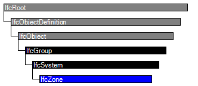

Natural language names
 | Zone |
 | Zone |
 | Zone |
| Zone |
| Zone |
| Zone |
| Item | SPF | XML | Change | Description | IFC2x3 to IFC4 |
|---|---|---|---|---|
| IfcZone | ||||
| OwnerHistory | MODIFIED | Instantiation changed to OPTIONAL. | ||
| LongName | ADDED |
A zone is a group of spaces, partial spaces or other zones. Zone structures may not be hierarchical (in contrary to the spatial structure of a project - see IfcSpatialStructureElement), i.e. one individual IfcSpace may be associated with zero, one, or several IfcZone's. IfcSpace's are grouped into an IfcZone by using the objectified relationship IfcRelAssignsToGroup as specified at the supertype IfcGroup.
NOTE Certain use cases may restrict the freedom of non hierarchical relationships. In some building service use cases the zone denotes a view based delimited volume for the purpose of analysis and calculation. This type of zone cannot overlap with respect to that analysis, but may overlap otherwise.
HISTORY New entity in IFC1.0
IFC4 CHANGE The entity is now subtyped from IfcSystem (not its supertype IfcGroup) with upward compatibility for file based exchange.
| # | Attribute | Type | Cardinality | Description | C |
|---|---|---|---|---|---|
| 6 | LongName | IfcLabel | [0:1] |
Long name for a zone, used for informal purposes. It should be used, if available, in conjunction with the inherited Name attribute.
NOTE In many scenarios the Name attribute refers to the short name or number of a zone, and the LongName refers to the full name. | X |
| Rule | Description |
|---|---|
| WR1 | An IfcZone is grouped by the objectified relationship IfcRelAssignsToGroup. Only objects of type IfcSpace, IfcZone and IfcSpatialZone are allowed as RelatedObjects. |

| # | Attribute | Type | Cardinality | Description | C |
|---|---|---|---|---|---|
| IfcRoot | |||||
| 1 | GlobalId | IfcGloballyUniqueId | [1:1] | Assignment of a globally unique identifier within the entire software world. | X |
| 2 | OwnerHistory | IfcOwnerHistory | [0:1] |
Assignment of the information about the current ownership of that object, including owning actor, application, local identification and information captured about the recent changes of the object,
NOTE only the last modification in stored - either as addition, deletion or modification. | X |
| 3 | Name | IfcLabel | [0:1] | Optional name for use by the participating software systems or users. For some subtypes of IfcRoot the insertion of the Name attribute may be required. This would be enforced by a where rule. | X |
| 4 | Description | IfcText | [0:1] | Optional description, provided for exchanging informative comments. | X |
| IfcObjectDefinition | |||||
| HasAssignments | IfcRelAssigns @RelatedObjects | S[0:?] | Reference to the relationship objects, that assign (by an association relationship) other subtypes of IfcObject to this object instance. Examples are the association to products, processes, controls, resources or groups. | X | |
| Nests | IfcRelNests @RelatedObjects | S[0:1] | References to the decomposition relationship being a nesting. It determines that this object definition is a part within an ordered whole/part decomposition relationship. An object occurrence or type can only be part of a single decomposition (to allow hierarchical strutures only). | X | |
| IsNestedBy | IfcRelNests @RelatingObject | S[0:?] | References to the decomposition relationship being a nesting. It determines that this object definition is the whole within an ordered whole/part decomposition relationship. An object or object type can be nested by several other objects (occurrences or types). | X | |
| HasContext | IfcRelDeclares @RelatedDefinitions | S[0:1] | References to the context providing context information such as project unit or representation context. It should only be asserted for the uppermost non-spatial object. | X | |
| IsDecomposedBy | IfcRelAggregates @RelatingObject | S[0:?] | References to the decomposition relationship being an aggregation. It determines that this object definition is whole within an unordered whole/part decomposition relationship. An object definitions can be aggregated by several other objects (occurrences or parts). | X | |
| Decomposes | IfcRelAggregates @RelatedObjects | S[0:1] | References to the decomposition relationship being an aggregation. It determines that this object definition is a part within an unordered whole/part decomposition relationship. An object definitions can only be part of a single decomposition (to allow hierarchical strutures only). | X | |
| HasAssociations | IfcRelAssociates @RelatedObjects | S[0:?] | Reference to the relationship objects, that associates external references or other resource definitions to the object.. Examples are the association to library, documentation or classification. | X | |
| IfcObject | |||||
| 5 | ObjectType | IfcLabel | [0:1] |
The type denotes a particular type that indicates the object further. The use has to be established at the level of instantiable subtypes. In particular it holds the user defined type, if the enumeration of the attribute PredefinedType is set to USERDEFINED.
| X |
| IsDeclaredBy | IfcRelDefinesByObject @RelatedObjects | S[0:1] | Link to the relationship object pointing to the declaring object that provides the object definitions for this object occurrence. The declaring object has to be part of an object type decomposition. The associated IfcObject, or its subtypes, contains the specific information (as part of a type, or style, definition), that is common to all reflected instances of the declaring IfcObject, or its subtypes. | X | |
| Declares | IfcRelDefinesByObject @RelatingObject | S[0:?] | Link to the relationship object pointing to the reflected object(s) that receives the object definitions. The reflected object has to be part of an object occurrence decomposition. The associated IfcObject, or its subtypes, provides the specific information (as part of a type, or style, definition), that is common to all reflected instances of the declaring IfcObject, or its subtypes. | X | |
| IsTypedBy | IfcRelDefinesByType @RelatedObjects | S[0:1] | Set of relationships to the object type that provides the type definitions for this object occurrence. The then associated IfcTypeObject, or its subtypes, contains the specific information (or type, or style), that is common to all instances of IfcObject, or its subtypes, referring to the same type. | X | |
| IsDefinedBy | IfcRelDefinesByProperties @RelatedObjects | S[0:?] | Set of relationships to property set definitions attached to this object. Those statically or dynamically defined properties contain alphanumeric information content that further defines the object. | X | |
| IfcGroup | |||||
| IsGroupedBy | IfcRelAssignsToGroup @RelatingGroup | S[0:?] | Reference to the relationship IfcRelAssignsToGroup that assigns the one to many group members to the IfcGroup object. | X | |
| IfcSystem | |||||
| ServicesBuildings | IfcRelServicesBuildings @RelatingSystem | S[0:1] | Reference to the | X | |
| IfcZone | |||||
| 6 | LongName | IfcLabel | [0:1] |
Long name for a zone, used for informal purposes. It should be used, if available, in conjunction with the inherited Name attribute.
NOTE In many scenarios the Name attribute refers to the short name or number of a zone, and the LongName refers to the full name. | X |
Classification Association
The Classification Association concept applies to this entity.
Additional classifications of the IfcZone, as provided by a national classification system, can be assigned by using the IfcRelAssociatesClassification relationship, accessible via the inverse attribute HasAssociations. The IfcZone can be assigned to a spatial structure element, it refers to, e.g. to a particular IfcBuildingStorey by using the IfcRelServicesBuildings relationship, accessible via the inverse attribute ServicesBuilding.
Property Sets for Objects
The Property Sets for Objects concept applies to this entity as shown in Table 78.
| |||||||||||||||||||||||||||||||||||||||||||||||||||||||||||||||||||||||||||||||||||||||||||||
Table 78 — IfcZone Property Sets for Objects |
Group Assignment
The Group Assignment concept applies to this entity as shown in Table 79.
| ||
Table 79 — IfcZone Group Assignment |
An IfcZone is a spatial system under which individual IfcSpace's (and other IfcZone's) are grouped. In contrary to the IfcSpatialZone entity, IfcZone is a mere grouping, it can not define an own geometric representation and placement. Therefore it cannot be used for spatial zones having a different shape and size compared to the shape and size of aggregated spaces.
NOTE The IfcZone is regarded as the spatial system (as compared to the building service, electrical, or analytical system), the name remains IfcZone for compatibility reasons, instead of using a proper naming convention, like IfcSpatialSystem.
NOTE One of the purposes of a zone is to define a fire compartmentation. In this case it defines the geometric information about the fire compartment (through the contained spaces) and information, whether this compartment is ventilated or sprinkler protected. In addition the fire risk code and the hazard type can be added, the coding is normally defined within a national fire regulation. All that information is available within the relevant property sets. Again, if an independent shape has to be provided to the fire compartment, then the entity IfcSpatialZone shall be used.
In case of a zone denoting a (fire) compartment, the following types should be used, if applicable, as values of the ObjectType attribute:
| # | Concept | Model View |
|---|---|---|
| IfcRoot | ||
| Software Identity | Common Use Definitions | |
| Revision Control | Common Use Definitions | |
| IfcObject | ||
| Object Occurrence Predefined Type | Common Use Definitions | |
| IfcGroup | ||
| IfcSystem | ||
| IfcZone | ||
| Classification Association | Common Use Definitions | |
| Property Sets for Objects | Common Use Definitions | |
| Group Assignment | Common Use Definitions | |
<xs:element name="IfcZone" type="ifc:IfcZone" substitutionGroup="ifc:IfcSystem" nillable="true"/>
<xs:complexType name="IfcZone">
<xs:complexContent>
<xs:extension base="ifc:IfcSystem">
<xs:attribute name="LongName" type="ifc:IfcLabel" use="optional"/>
</xs:extension>
</xs:complexContent>
</xs:complexType>
ENTITY IfcZone
SUBTYPE OF (IfcSystem);
LongName : OPTIONAL IfcLabel;
WHERE
WR1 : (SIZEOF(SELF\IfcGroup.IsGroupedBy) = 0) OR
(SIZEOF (QUERY (temp <* SELF\IfcGroup.IsGroupedBy[1].RelatedObjects |
NOT(('IFCPRODUCTEXTENSION.IFCZONE' IN TYPEOF(temp)) OR
('IFCPRODUCTEXTENSION.IFCSPACE' IN TYPEOF(temp)) OR
('IFCPRODUCTEXTENSION.IFCSPATIALZONE' IN TYPEOF(temp))
))) = 0);
END_ENTITY;
 Instance diagram
Instance diagram Link to this page
Link to this page